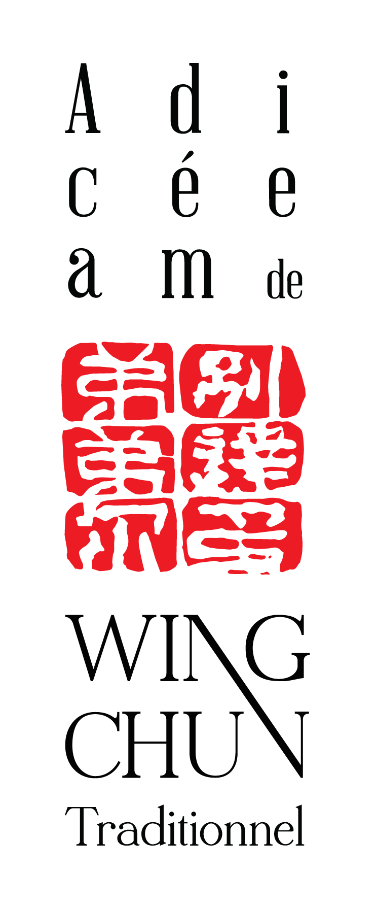

- Protège toujours ton centre, que ce soit dans l'attaque ou la défense.
- Utilise la force de l'adversaire pour la retourner contre lui.
- Utilise les principes de déviation de force pour la défense et la ligne droite pour l'attaque.

- Lorsque le pont a été établi, reste collé aux avant-bras de l'adversaire car l'information transite plus rapidement par le contact que par l'oeil.
- Si la force adverse est trop grande, cède et utilise ton système de déplacement pour te restructurer.
- Si l'adversaire recule, suis-le et maintiens la pression, ne le laisse pas reconstruire de nouveaux plans.
- N'utilise pas ta force de frappe mais la vitesse et la masse de ton corps.